37 Tobit 模型：潜在净借款需求、边界归并与边际效应
在企业信贷数据中，我们经常看到一种很典型的分布：不少企业的银行贷款金额等于 0，另一些企业则有连续的正贷款金额。面对这样的因变量，第一反应不能只是说“这些企业没有贷款”，而要继续追问：这个 0 是怎样生成的？
同样是贷款金额为 0，背后可能有不同机制：
- 企业确实没有使用银行贷款；
- 企业存在一个连续的潜在借款需求，但这个潜在需求没有跨过 0 这个边界；
- 研究对象其实不是贷款金额，而是贷款利率等变量，此时没有贷款的企业并不是利率为 0，而是利率不可观测。
本章先讨论第二种机制。我们假设存在一个连续潜变量 \(B_i^*\)，它表示企业的潜在净借款需求。实际观测到的银行贷款金额 \(B_i\) 不能为负，因此所有 \(B_i^*\le 0\) 的企业都会被记录为 \(B_i=0\)。用一个简单公式表示，就是
\[ B_i=\max(0,B_i^*) \]
Tobit 模型的核心，不是“因变量有很多 0”，而是 先有一个连续的潜在过程，再有一个边界归并的观测规则。本章要反复强调的建模链条是：
\[ \text{企业特征} \rightarrow \text{潜在净借款需求 } B_i^* \rightarrow \text{观测到的贷款金额 } B_i \rightarrow \text{似然函数、条件期望与边际效应} \]
理解这条链条之后，后续再看 Two-part model、Hurdle model 和 Heckman selection，就不会把“0 点堆积”“真实不参与”和“结果变量不可观测”混在一起。
37.1 1. 从一张图理解 Tobit 的观测机制
先不急着进入企业贷款案例。设想有一个连续潜变量 \(y^*\)。它本身可以小于 0，也可以大于 0。但实际观测变量 \(y\) 不能为负，所以研究者在数据中只能看到
\[ y=\max(0,y^*) \]
这条规则意味着：
- 当 \(y^*>0\) 时，观测到 \(y=y^*\)；
- 当 \(y^*\le 0\) 时，观测到 \(y=0\)；
- 因此，观测变量会在 0 点形成堆积，而正值部分仍然呈连续分布。
下面这张图只说明 Tobit 的基本观测机制。它暂时不涉及贷款、研发或消费等具体背景，目的只是让读者先看到：潜变量的连续分布，经过边界规则之后，会变成“0 点堆积 + 正值连续”的观测变量。
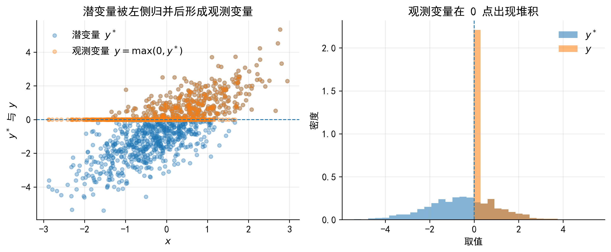
把这个图放回企业信贷场景中，可以把 \(y^*\) 理解为企业的潜在净借款需求 \(B_i^*\)，把 \(y\) 理解为实际观测到的银行贷款金额 \(B_i\)。
这里最需要提前说明的是：\(B_i^*<0\) 并不表示企业有“负贷款”。它只是说明，在企业投资机会、抵押能力、内部资金和融资成本等因素共同作用下，企业处在不使用银行贷款的一侧。由于实际贷款金额不能为负，这些企业最终都被记录为 \(B_i=0\)。
因此，Tobit 不是一个简单的“处理大量 0 的工具”，而是一种关于数据生成过程的假设：数据中的 0 来自连续潜变量在边界处的归并。
censoring 的译法
本讲义将 censoring 主要译为“归并”。这个译法强调：样本仍然保留在数据中，只是边界以外的潜在取值被统一记录为边界值。中文文献中也常见“删失”“审查”“截尾”等译法，但“截尾”容易与 truncation 混淆，因此本章尽量不用“截尾”指代 censoring。
与此相对，truncation 译为“截断”，指不满足条件的样本根本没有进入数据。归并与截断的区别，是理解 Tobit、截断回归和 Heckman 选择模型的基础。
企业研发投入强度也常出现类似形态：一部分企业当期研发投入为 0，另一部分企业有正的研发投入强度。下面两张图保留为概念补充，用来帮助读者直观看到“0 点堆积 + 正值连续分布”的数据特征。
需要注意的是，本章正文仍以企业银行贷款为主例。研发投入只是提醒我们：只要因变量在 0 点有大量堆积，研究者就需要先判断 0 的生成机制，而不是机械地把所有零值变量都交给同一个模型。
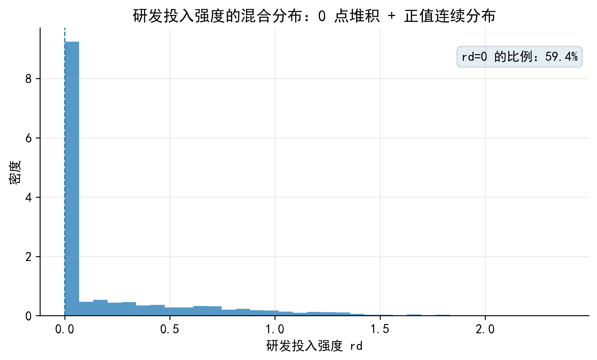
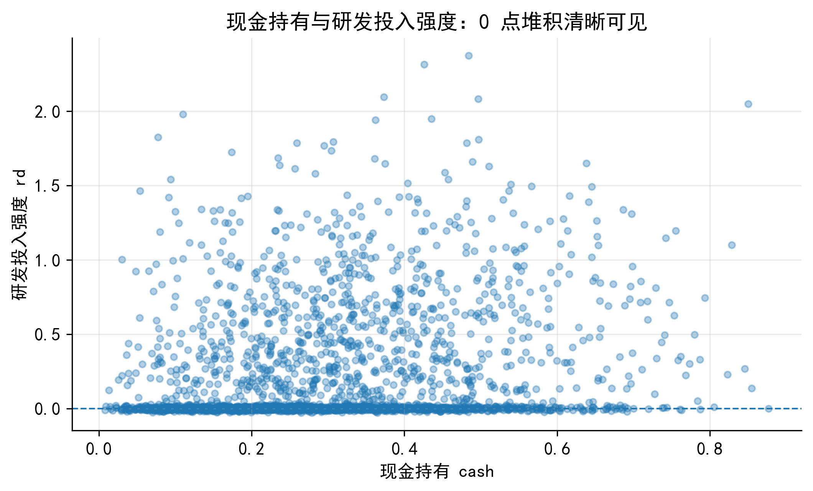
37.2 2. 如何理解潜在净借款需求 \(B_i^*\)？
Tobit 模型最容易让初学者困惑的地方，不是公式本身，而是潜变量的经济含义。对于企业贷款案例，不能把 \(B_i^*\) 直接理解为实际贷款金额。实际贷款金额不能为负，因此如果把 \(B_i^*\) 当成真实金额，\(B_i^*<0\) 就会显得很奇怪。
更合适的解释是：\(B_i^*\) 表示企业的潜在净借款需求，或潜在信贷使用强度。它不是会计报表中的贷款余额，而是企业在投资机会、抵押能力、内部资金和融资成本共同作用下形成的一种净需求指标。
设主模型为
\[ B_i^* = \alpha +\beta_1 opportunity_i +\beta_2 collateral_i -\beta_3 cash_i +u_i \]
实际可观测贷款金额为
\[ B_i=\max(0,B_i^*) \]
这三个解释变量不是随意挑选的控制变量，而是分别对应潜在净借款需求的三个来源。
| 变量 | 经济含义 | 对 \(B_i^*\) 的预期影响 |
|---|---|---|
| \(opportunity_i\) | 投资机会或资金需求强度，例如销售增长、订单增长、ROA 与贷款成本之间的差距 | 正 |
| \(collateral_i\) | 抵押能力或可抵押资产比例，例如固定资产占比 | 正 |
| \(cash_i\) | 内部资金充裕程度，例如现金持有或经营现金流 | 负 |
这个设定的好处在于，\(x_i\) 与潜变量的经济解释是连在一起的。
- 投资机会越强，外部融资的边际收益越高，企业越有动力使用银行贷款；
- 抵押能力越强，企业越容易获得银行授信，也更可能获得较高额度；
- 内部资金越充裕，企业越可能使用自有资金，而不是依赖外部贷款。
因此，\(B_i^*<0\) 的含义不是“贷款金额为负”，而是企业在这些因素共同作用下没有形成正的银行借款需求。实际贷款金额被限制在非负区域，所以这类企业在数据中被记录为 \(B_i=0\)。
\(B_i^*\) 是潜在净借款需求，不是实际贷款金额。企业可能因为投资机会不足、内部现金流充裕、融资成本较高，或者管理层风险偏好较低，而没有使用银行贷款的经济动机。此时，潜在净借款需求可以落在 0 以下，比如，企业将盈余资金进行投资理财 (相当于借款给银行) 或偿还债务 (相当于减少借款需求)。
但现实中的贷款金额 \(B_i\) 不能为负。于是，所有 \(B_i^*\le 0\) 的企业都被记录为 \(B_i=0\)。这就是“归并”的含义：样本仍然留在数据中，只是边界以下的潜在取值被统一合并到边界值。
37.3 3. Tobit 的模型设定
标准左侧归并 Tobit 模型可以写成两个方程。
潜变量方程为
\[ B_i^*=x_i'\beta+u_i, \quad u_i\sim N(0,\sigma^2) \]
观测方程为
\[ B_i= \begin{cases} B_i^*, & B_i^*>0,\\ 0, & B_i^*\le 0. \end{cases} \]
这两个方程的含义不同。
- 潜变量方程描述企业特征如何影响潜在净借款需求；
- 观测方程描述潜变量如何被记录成数据中的贷款金额。
Tobit 的关键假设是：\(B_i=0\) 和 \(B_i>0\) 都来自同一个潜在连续过程。换言之，同一组解释变量 \(x_i\) 既影响企业是否跨过 0 这个边界，也影响跨过边界后的贷款金额大小。
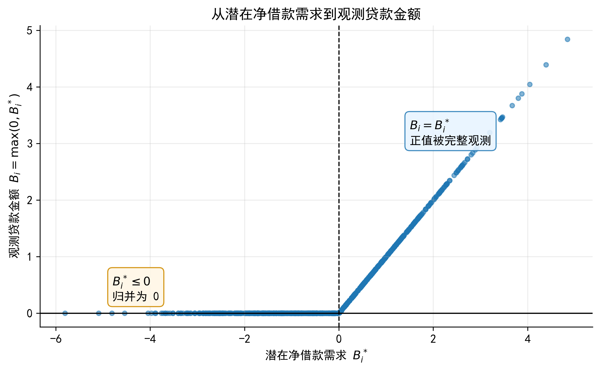
Tobit 不是“看到很多 0 就用”的模型。它要求 0 值样本和正值样本都能由同一个潜在变量方程解释。是否跨过 0 这个边界，以及跨过边界以后金额有多大，本质上都由同一套 \(x_i'\beta\) 驱动。
如果研究者认为“是否获得贷款”和“获得贷款后贷多少”由不同机制决定，那么 Two-part model 通常更自然。
37.4 4. 归并、截断与角点解
在进入似然函数之前，需要先区分三个容易混淆的概念。
| 数据机制 | 样本是否仍在数据中 | 0 或边界值的含义 | 常见模型 |
|---|---|---|---|
| 归并 (censoring) | 是 | 边界外潜在取值被合并为边界值 | Tobit |
| 截断 (truncation) | 否 | 不满足边界条件的样本未进入数据 | Truncated regression |
| 角点解 (corner solution) | 是 | 0 是经济主体真实选择结果 | Tobit 或 Two-part，取决于机制 |
企业贷款金额可以被看作一种角点解：企业最终可以选择不使用银行贷款。Tobit 对这个现象增加了一个更具体的结构性解释：这些 0 来自连续潜在净借款需求 \(B_i^*\) 在 0 边界处的归并。
因此，Tobit 的问题不是“0 是否真实存在”，而是研究者是否愿意接受一个共同潜在机制：同一套企业特征同时决定企业是否有正贷款，以及正贷款金额有多大。
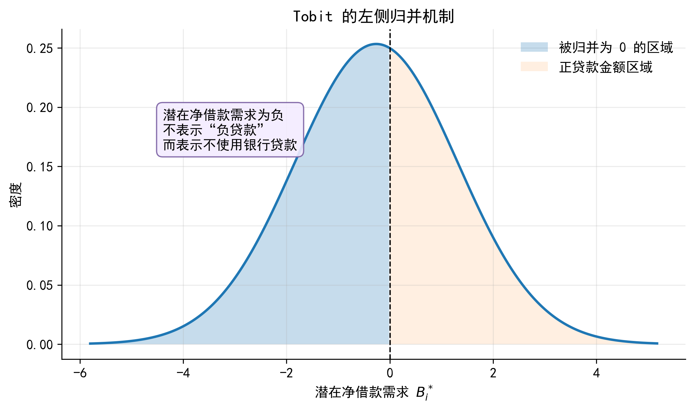
37.5 5. Tobit 的似然函数
Tobit 与 OLS 的核心差别，体现在似然函数中。OLS 把所有观测值都当作同一个连续密度中的实现值；Tobit 则把样本分成两类来处理。
- 当 \(B_i=0\) 时，我们没有观察到具体的 \(B_i^*\)，只知道 \(B_i^*\le 0\)，因此这类样本贡献的是一个概率；
- 当 \(B_i>0\) 时，我们观察到 \(B_i=B_i^*\)，因此这类样本贡献的是潜变量在观测值处的正态密度。
记 \(\mu_i=x_i'\beta\)。对于 0 贷款样本，
\[ P(B_i=0\mid x_i) = P(B_i^*\le 0\mid x_i) = \Phi\left(-\frac{\mu_i}{\sigma}\right) \]
对于正贷款样本，似然贡献为
\[ \frac{1}{\sigma} \phi\left(\frac{B_i-\mu_i}{\sigma}\right) \]
因此，对数似然函数为
\[ \ell(\beta,\sigma) = \sum_{B_i=0} \log \Phi\left(-\frac{x_i'\beta}{\sigma}\right) + \sum_{B_i>0} \left[ -\log\sigma + \log\phi\left(\frac{B_i-x_i'\beta}{\sigma}\right) \right] \]
这个表达式说明，Tobit 同时使用 0 样本和正值样本的信息，但两类样本对似然函数的贡献不同：0 样本告诉我们哪些企业没有跨过边界，正值样本告诉我们跨过边界后的金额分布。
如果只保留 \(B_i>0\) 的企业做 OLS，我们实际上改变了样本。正贷款企业不是总体企业的随机子样本，而是已经跨过 \(B_i^*>0\) 边界的企业。
这意味着，在这个子样本中，误差项的条件均值通常不再为 0。直观地说，一些企业之所以能够出现在正贷款样本中，可能正是因为它们有较强的未观测融资需求、较好的银行关系或短期资金冲击。
逆米尔斯比率出现的原因就在这里：它刻画的是，样本跨过边界以后，未观测因素的平均值如何偏离原来的无条件均值。
37.6 6. 截断正态分布与逆米尔斯比率
为了理解 Tobit 的条件期望和边际效应，需要先理解截断正态分布。这里的“截断正态”是指正态分布在某个条件下被截取后的分布，不等同于前面所说的“样本截断”模型。
设
\[ B_i^*=x_i'\beta+u_i, \quad u_i\sim N(0,\sigma^2) \]
令
\[ a_i=\frac{x_i'\beta}{\sigma} \]
当我们只看正贷款企业时，条件是 \(B_i^*>0\)，也就是
\[ u_i>-x_i'\beta \]
因此，误差项不再服从完整的正态分布，而是服从一个被条件事件截取后的正态分布。此时有
\[ E(u_i\mid B_i>0,x_i) = \sigma\lambda(a_i) \]
其中
\[ \lambda(a_i)=\frac{\phi(a_i)}{\Phi(a_i)} \]
称为逆米尔斯比率 (Inverse Mills Ratio, IMR)。
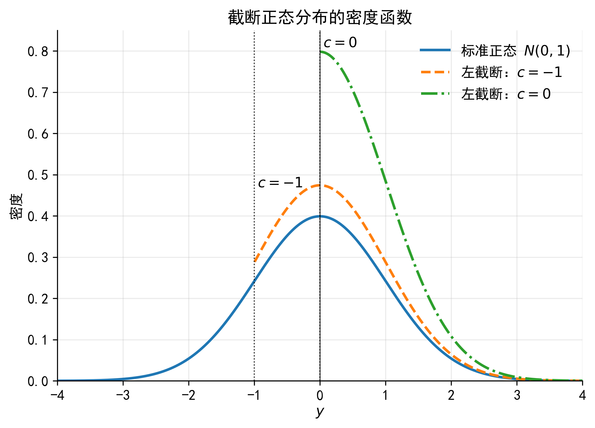
37.6.1 6.1 IMR 的直觉含义
IMR 不是一个神秘的修正项。它来自正态分布在给定条件后的均值变化。
假设某个企业的 \(x_i'\beta\) 很低。按照可观测特征来看，它本来不太可能有正贷款。如果这个企业仍然出现在正贷款样本中，一个自然解释是：它有较大的正向未观测因素 \(u_i\)，例如临时资金需求、未被研究者观测到的银行关系，或者某个短期投资项目。
因此，在正贷款样本中，\(u_i\) 的平均值通常不再是 0。IMR 衡量的就是这个平均修正量：
\[ E(u_i\mid B_i>0,x_i)-E(u_i\mid x_i) = \sigma\lambda(a_i) \]
当 \(a_i=x_i'\beta/\sigma\) 较低时，企业本来更不容易跨过 0 边界。一旦它被观察到有正贷款，说明未观测因素的平均正向修正更大，因此 IMR 通常较高。
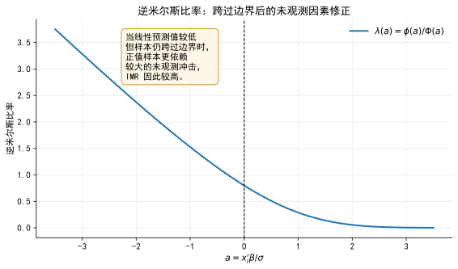
37.6.2 6.2 IMR 的统计含义
在完整总体中，经典假设给出
\[ E(u_i\mid x_i)=0 \]
但在正贷款样本中，条件变成了 \(B_i^*>0\)，于是
\[ E(u_i\mid B_i>0,x_i) = \sigma\lambda(a_i)\ne 0 \]
这说明，如果只用 \(B_i>0\) 的样本估计线性模型，误差项的条件均值一般不再为 0。统计上，这就是样本被选择到正值区域后造成的条件均值偏移。
Tobit 模型通过完整似然函数处理这个问题。Heckman 模型中出现的 IMR 也来自类似逻辑：当结果变量只在被选择样本中可观测时，误差项的条件均值会发生系统性偏移。
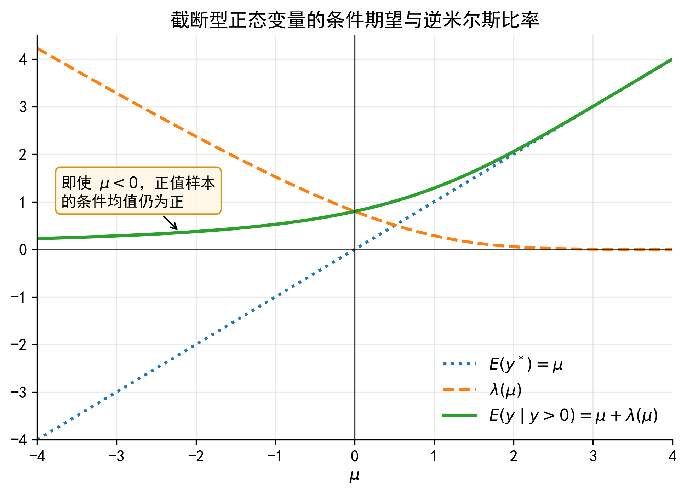
IMR 修正的不是“少放了一个控制变量”这么简单。它刻画的是：在只观察到某一部分样本时，误差项的条件均值不再为 0。
在 Tobit 中，正值样本满足 \(B_i^*>0\)；在 Heckman 模型中，结果变量只在选择方程通过后才可观测。两者的共同点是：被观察到的样本不是总体的随机子样本，因此需要显式处理误差项条件均值的偏移。
37.7 7. Tobit 的条件期望
Tobit 模型中有几个不同的期望对象。初学者最常见的错误，是把 Tobit 回归表中的 \(\beta_j\) 直接解释为对观测贷款金额 \(B_i\) 的边际效应。实际上，\(\beta_j\) 首先描述的是解释变量对潜在净借款需求 \(B_i^*\) 的影响。
37.7.1 7.1 潜在净借款需求的条件均值
\[ E(B_i^*\mid x_i)=x_i'\beta \]
这是最接近 OLS 的部分。例如，若 \(opportunity_i\) 增加 1 个单位，则潜在净借款需求增加 \(\beta_1\) 个单位。
37.7.2 7.2 正贷款概率
因为 \(B_i>0\) 等价于 \(B_i^*>0\)，所以
\[ P(B_i>0\mid x_i) = P(u_i>-x_i'\beta) = \Phi\left(\frac{x_i'\beta}{\sigma}\right) = \Phi(a_i) \]
37.7.3 7.3 正贷款企业的条件均值
对于已经有正贷款的企业，
\[ E(B_i\mid B_i>0,x_i) = E(B_i^*\mid B_i^*>0,x_i) = x_i'\beta+\sigma\lambda(a_i) \]
这说明，正值样本的条件均值不只是 \(x_i'\beta\)，还包含一个来自截断正态分布的 IMR 修正项。
37.7.4 7.4 观测贷款金额的非条件期望
对实际观测变量 \(B_i\)，非条件期望为
\[ E(B_i\mid x_i) = \Phi(a_i)x_i'\beta+\sigma\phi(a_i) \]
也可以写成
\[ E(B_i\mid x_i) = P(B_i>0\mid x_i) \cdot E(B_i\mid B_i>0,x_i) \]
这个分解非常重要：观测贷款金额的期望同时由两部分决定，一是企业出现正贷款的概率，二是正贷款企业的条件贷款金额。
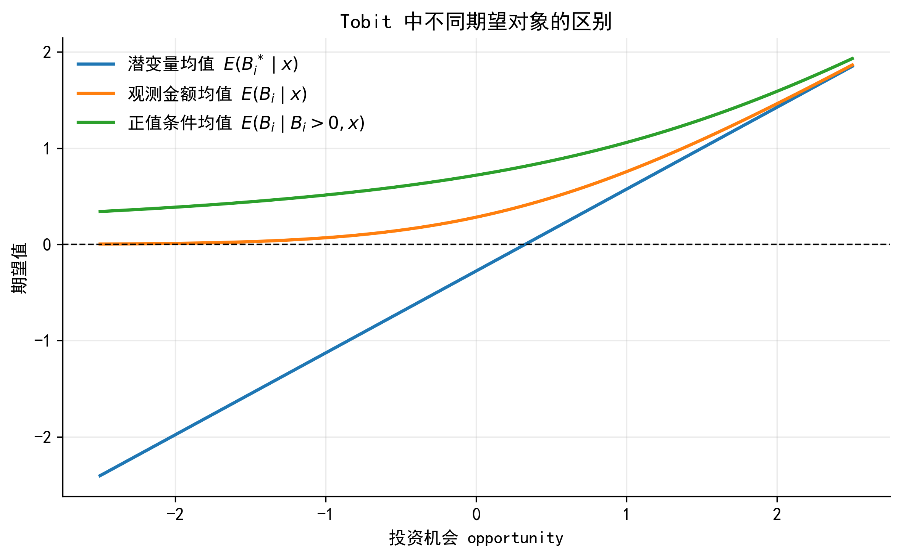
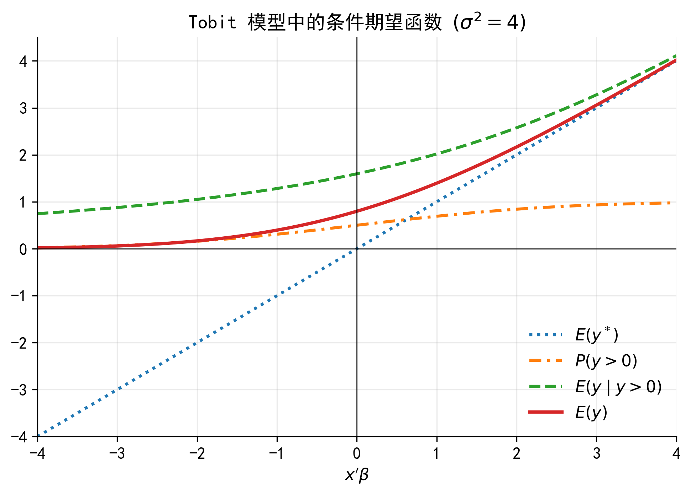
37.8 8. Tobit 的边际效应
Tobit 的边际效应必须先说明“对什么对象求边际效应”。同一个解释变量 \(x_{ij}\)，对应不同对象时，边际效应并不相同。
37.8.1 8.1 对潜在净借款需求的边际效应
\[ \frac{\partial E(B_i^*\mid x_i)}{\partial x_{ij}} = \beta_j \]
这是 Tobit 系数最直接的含义。
37.8.2 8.2 对正贷款概率的边际效应
\[ \frac{\partial P(B_i>0\mid x_i)}{\partial x_{ij}} = \phi(a_i)\frac{\beta_j}{\sigma} \]
如果 \(x_{ij}\) 提高了潜在净借款需求，它也会提高企业跨过 0 边界的概率。
37.8.3 8.3 对观测贷款金额的边际效应
\[ \frac{\partial E(B_i\mid x_i)}{\partial x_{ij}} = \Phi(a_i)\beta_j \]
这个公式很直观：变量对观测贷款金额的总影响，等于它对潜在净借款需求的影响 \(\beta_j\)，乘以企业出现正贷款的概率 \(\Phi(a_i)\)。
37.8.4 8.4 对正值条件均值的边际效应
\[ \frac{\partial E(B_i\mid B_i>0,x_i)}{\partial x_{ij}} = \beta_j \left[ 1-\lambda(a_i)\{a_i+\lambda(a_i)\} \right] \]
这项比前面更复杂，因为 \(x_{ij}\) 不仅改变 \(x_i'\beta\)，也会改变正值样本中的 IMR 修正项。
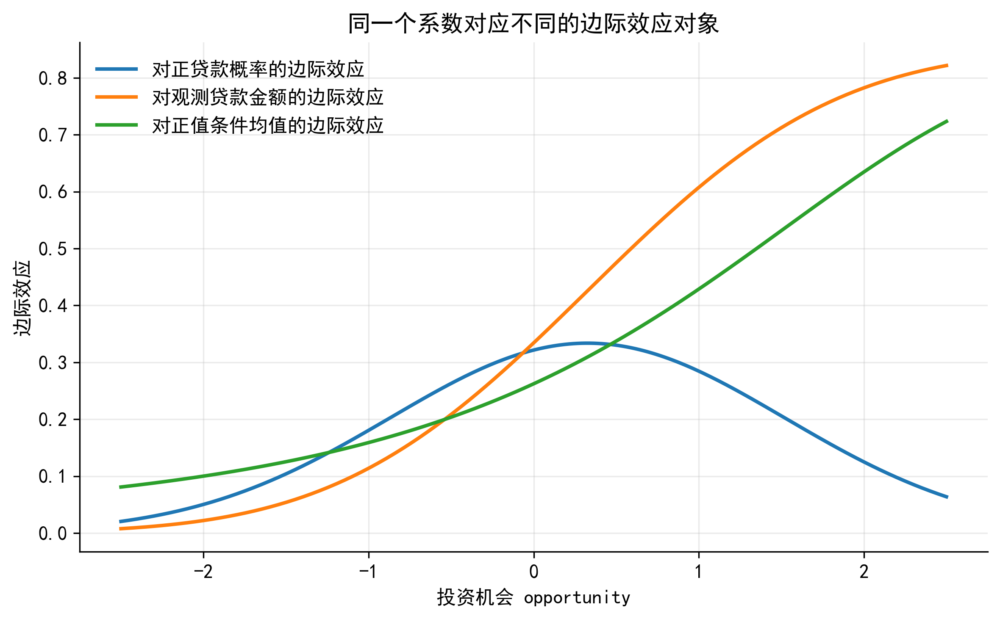
如果 Tobit 输出中 \(opportunity\) 的系数为正，它首先表示投资机会提高潜在净借款需求 \(B_i^*\)。但对于观测贷款金额 \(B_i\)，还要考虑企业是否跨过 0 边界。
因此，对 \(E(B_i\mid x_i)\) 的边际效应通常不是 \(\beta_j\) 本身，而是 \(\Phi(a_i)\beta_j\)。这个边际效应会随 \(x_i\) 的取值变化。实证论文报告 Tobit 结果时，最好同时报告或解释边际效应，并说明边际效应对应的是正值概率、非条件期望，还是正值条件均值。
37.9 9. OLS、正值样本 OLS 与 Tobit
面对有大量 0 的贷款金额数据，常见但不完全合理的做法有两种。
第一种是对所有样本直接做 OLS：
\[ B_i=x_i'\theta+\varepsilon_i \]
这种做法简单，但没有显式处理 \(B_i\) 不能为负以及大量观测值集中在 0 边界的问题。
第二种是只保留 \(B_i>0\) 的企业做 OLS：
\[ B_i=x_i'\delta+\eta_i, \quad B_i>0 \]
这种做法看似避开了 0，却改变了估计对象。它估计的是正贷款企业的条件均值，而正贷款企业通常不是总体企业的随机子样本。由于样本已经经过 \(B_i^*>0\) 的筛选，误差项的条件均值可能偏离 0。
Tobit 的做法是使用完整样本，并通过似然函数同时处理 0 样本的概率信息和正值样本的密度信息。
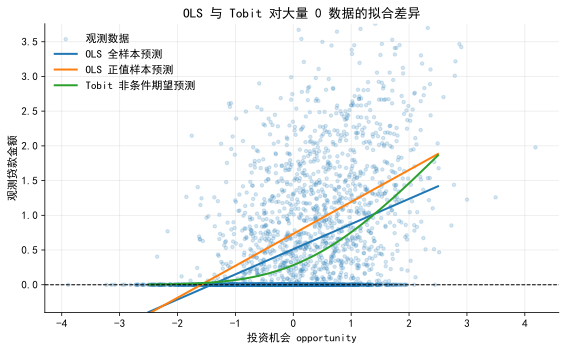
37.10 10. Stata 示例：模拟企业贷款金额
下面的 Stata 代码演示如何生成一个简单的企业贷款 Tobit 数据，并估计 Tobit 模型。实际授课时，可以先用模拟数据讲清楚机制，再替换为真实数据案例。
clear all
set seed 20260429
set obs 3000
* 生成企业特征变量
gen opportunity = rnormal()
gen collateral = rnormal()
gen cash = rnormal()
* 生成潜在净借款需求
gen u = rnormal()
gen loan_star = -0.25 ///
+ 0.85 * opportunity ///
+ 0.70 * collateral ///
- 0.55 * cash ///
+ u
* 观测贷款金额：左侧归并在 0
gen loan_amt = max(0, loan_star)
* Tobit 模型
tobit loan_amt opportunity collateral cash, ll(0)
* 对观测贷款金额的平均边际效应
margins, dydx(*) predict(ystar(0,.))
* 对正贷款概率的平均边际效应
margins, dydx(*) predict(pr(0,.))
* 对潜变量的边际效应
margins, dydx(*) predict(xb)不同的 predict() 选项对应不同解释对象。写作或汇报时，必须说明自己解释的是潜变量、正值概率，还是观测变量的期望。
37.11 11. Tobit 的适用条件与局限
Tobit 模型适合用于以下情形：
- 因变量在某个边界处有大量堆积；
- 样本仍然完整保留在数据中；
- 研究者认为边界值和正值部分来自同一个潜在连续机制；
- 同一组变量同时影响是否跨过边界和跨过边界后的金额。
但 Tobit 也有较强假设：
- 潜变量误差项通常假定为正态且同方差；
- 是否为正和正值大小被同一个 \(x_i'\beta\) 绑定在一起；
- 如果 0 是真实参与决策，且参与和金额由不同机制决定，Tobit 可能过于受限；
- 如果结果变量只在被选择样本中可观测，问题就不再是 Tobit，而是样本选择模型。
因此，Tobit 更适合作为理解受限因变量模型的基准入口，而不是处理所有零值因变量的通用工具。
如果研究者认为企业是否贷款和贷款金额都由同一个潜在净借款需求 \(B_i^*\) 决定，Tobit 是一个自然的基准模型。
如果研究者认为企业首先决定是否进入信贷关系，获得贷款后才决定贷款规模，那么“是否发生”和“发生多少”就是两个机制。此时，Two-part model 通常更合适。
37.12 12. 小结
本章的核心不是记住 Tobit 命令，而是建立一套受限因变量模型的基本思路：
\[ \text{经济机制} \rightarrow \text{潜在变量} \rightarrow \text{观测规则} \rightarrow \text{似然函数} \rightarrow \text{条件期望与边际效应} \]
在企业贷款案例中，\(B_i^*\) 是潜在净借款需求，\(B_i\) 是实际可观测贷款金额。\(B_i^*<0\) 不表示负贷款，而表示企业处在不使用银行贷款的一侧。Tobit 通过 \(B_i=\max(0,B_i^*)\) 把潜变量和观测变量连接起来。
理解 Tobit 的另一个关键是 IMR。它说明，在只看跨过边界的样本时，误差项的条件均值不再为 0。这个思想不仅解释了 Tobit 的条件均值，也为后续理解 Heckman 选择模型打下基础。
37.13 附录 A1：Tobit 似然函数推导
设 \(d_i=1(B_i>0)\)，\(\mu_i=x_i'\beta\)。当 \(B_i=0\) 时，观测到的事件是 \(B_i^*\le 0\)：
\[ P(B_i=0\mid x_i) = P(u_i\le -\mu_i) = \Phi\left(-\frac{\mu_i}{\sigma}\right) \]
当 \(B_i>0\) 时，\(B_i=B_i^*\)，潜变量在观测值处的密度为
\[ f(B_i\mid x_i) = \frac{1}{\sigma} \phi\left(\frac{B_i-\mu_i}{\sigma}\right) \]
因此，单个样本的似然贡献为
\[ L_i(\beta,\sigma) = \left[ \Phi\left(-\frac{\mu_i}{\sigma}\right) \right]^{1-d_i} \left[ \frac{1}{\sigma} \phi\left(\frac{B_i-\mu_i}{\sigma}\right) \right]^{d_i} \]
取对数后得到
\[ \ell_i(\beta,\sigma) = (1-d_i)\log \Phi\left(-\frac{\mu_i}{\sigma}\right) + d_i \left[ -\log\sigma+ \log\phi\left(\frac{B_i-\mu_i}{\sigma}\right) \right] \]
全样本对数似然为 \(\ell(\beta,\sigma)=\sum_i \ell_i(\beta,\sigma)\)。
37.14 附录 A2：估计方法：MLE
本节的目的不是手写 Tobit 的 MLE 程序。这里的目标是理解：Tobit 为什么不是 OLS？为什么模型要同时处理 0 点概率和正值部分密度？这对于理解 Tobit 的系数和边际效应非常重要，也是理解后续扩展模型 (如 Truncated regression、Two-part model、Heckman selection) 的基础。
37.14.1 被删失样本的概率贡献
当 \(y_i=0\) 时，我们知道：
\[ y_i^*\leq 0 \]
由潜变量模型：
\[ y_i^* = x_i'\beta + u_i \]
所以：
\[ P(y_i=0\mid x_i) = P(y_i^*\leq 0\mid x_i) \]
代入 \(y_i^*=x_i'\beta+u_i\)：
\[ P(y_i^*\leq 0\mid x_i) = P(x_i'\beta+u_i\leq 0\mid x_i) \]
把 \(x_i'\beta\) 移到不等式右边：
\[ P(x_i'\beta+u_i\leq 0\mid x_i) = P(u_i\leq -x_i'\beta\mid x_i) \]
由于 \(u_i\sim N(0,\sigma^2)\)，可以把 \(u_i\) 标准化：
\[ \frac{u_i}{\sigma}\sim N(0,1) \]
因此：
\[ P(u_i\leq -x_i'\beta\mid x_i) = P\left( \frac{u_i}{\sigma} \leq -\frac{x_i'\beta}{\sigma} \right) \]
标准正态分布的累积分布函数记为 \(\Phi(\cdot)\)，所以：
\[ P(y_i=0\mid x_i) = \Phi\left( -\frac{x_i'\beta}{\sigma} \right) \]
也可以写成：
\[ P(y_i=0\mid x_i) = 1-\Phi\left( \frac{x_i'\beta}{\sigma} \right) \]
因为标准正态分布是对称的。
37.15 附录 B：截断正态、条件均值与 IMR
令 \(Z\sim N(0,1)\)。若只观察 \(Z>c\) 的部分，则
\[ E(Z\mid Z>c) = \frac{\phi(c)}{1-\Phi(c)} \]
在 Tobit 中，\(u_i/\sigma=Z_i\)，正贷款条件为
\[ B_i^*>0 \Longleftrightarrow u_i>-\mu_i \Longleftrightarrow Z_i>-\frac{\mu_i}{\sigma} = -a_i \]
因此，
\[ E(Z_i\mid Z_i>-a_i) = \frac{\phi(-a_i)}{1-\Phi(-a_i)} = \frac{\phi(a_i)}{\Phi(a_i)} = \lambda(a_i) \]
于是
\[ E(u_i\mid B_i>0,x_i) = \sigma\lambda(a_i) \]
进而
\[ E(B_i\mid B_i>0,x_i) = \mu_i+\sigma\lambda(a_i) \]
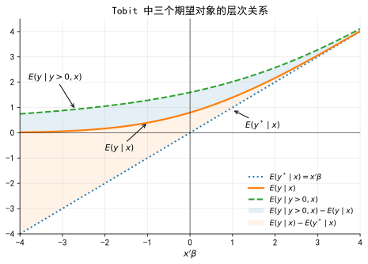
37.16 附录 C：边际效应推导
记
\[ a_i=\frac{x_i'\beta}{\sigma} \]
正贷款概率为
\[ P(B_i>0\mid x_i)=\Phi(a_i) \]
因此
\[ \frac{\partial P(B_i>0\mid x_i)}{\partial x_{ij}} = \phi(a_i)\frac{\beta_j}{\sigma} \]
观测贷款金额的非条件期望为
\[ E(B_i\mid x_i)=\Phi(a_i)\mu_i+\sigma\phi(a_i) \]
对 \(x_{ij}\) 求导：
\[ \frac{\partial E(B_i\mid x_i)}{\partial x_{ij}} = \frac{\partial \Phi(a_i)}{\partial x_{ij}}\mu_i + \Phi(a_i)\beta_j + \sigma \frac{\partial \phi(a_i)}{\partial x_{ij}} \]
注意
\[ \frac{\partial \Phi(a_i)}{\partial x_{ij}} = \phi(a_i)\frac{\beta_j}{\sigma} \]
以及
\[ \frac{\partial \phi(a_i)}{\partial x_{ij}} = -a_i\phi(a_i)\frac{\beta_j}{\sigma} \]
代入后，第一项和第三项相互抵消：
\[ \frac{\partial E(B_i\mid x_i)}{\partial x_{ij}} = \Phi(a_i)\beta_j \]
这个公式说明，Tobit 中观测结果的边际效应由潜变量斜率和正值概率共同决定。
37.17 参考文献
- Tobin, J. (1958). Estimation of relationships for limited dependent variables. Econometrica, 26(1), 24-36. Link, PDF, Google.
- Amemiya, T. (1984). Tobit models: A survey. Journal of Econometrics, 24(1-2), 3-61. Link, PDF, Google.
- Heckman, J. J. (1979). Sample selection bias as a specification error. Econometrica, 47(1), 153-161. Link, PDF, Google.